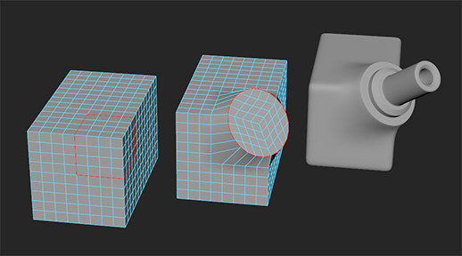
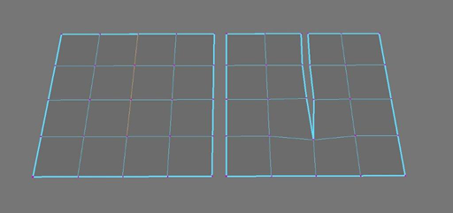

- 位于“建模”(Modeling)菜单集中。
组件(Components)
- 添加分段(Add Divisions)
-
将选定的多边形组件（边或面）分割为较小的组件。当您需要以全局或局部方式为现有多边形网格添加细节时，“添加分段”(Add Divisions)非常有用。多边形面可以拆分为三边（三角形）或四边（四边形）面。边可以进行细分，这样就可以增加面的边数。
选择“编辑网格 > 添加分段”(Edit Mesh > Add Divisions) >
 以设置添加分段选项(Add Divisions Options)。
注： “添加分段选项”(Add Divisions Options)窗口的内容会根据您当前所处的组件选择模式而发生更改。
以设置添加分段选项(Add Divisions Options)。
注： “添加分段选项”(Add Divisions Options)窗口的内容会根据您当前所处的组件选择模式而发生更改。 - 倒角(Bevel)
-
沿当前选定的边或面创建倒角多边形。请参见“倒角”(Bevel)命令和倒角多边形边和面。
选择“编辑网格 > 倒角”(Edit Mesh > Bevel) >
以设置倒角选项(Bevel Options)。
- 桥接(Bridge)
-
在现有多边形网格上选定的成对边界边之间构造桥接多边形网格（附加面）。生成的桥接多边形网格与原始多边形网格组合在一起，且它们的边会进行合并。请参见“桥接”(Bridge)命令和在边界边之间桥接。
选择“编辑网格 > 桥接”(Edit Mesh > Bridge) >
以设置桥接选项(Bridge Options)。
- 圆形圆角(Circularize)
-
圆形圆角组件。

选择“编辑网格 > 圆形圆角”(Edit Mesh > Circularize) >
以设置圆形化选项(Circularize Options)。
- 收拢(Collapse)
- 按组件基础使组件的边收拢，然后单独合并每个收拢边关联的顶点。收拢还适用于面，但在用于边时能够产生更理想的效果。如果要收拢并合并所选的面，首先应选择(Edit Mesh > Merge to Center)。
- 连接(Connect)
- 选择顶点和/或边后，“连接”(Connect)会通过边将其连接。顶点将直接连接到连接边，而边将在其中点处进行连接。
选择“编辑网格 > 连接”(Edit Mesh > Connect) >
以设置连接组件选项(Connect Components Options)。
- 分离(Detach)
-
选择顶点后，“分离”(Detach)会根据顶点共享的面数，将多个面共享的选定顶点分离为多个顶点。因此，与顶点关联的面的边成为未共享。选定面时，“分离”(Detach)将沿其周长边分离面选择。选择边后，“分离”(Detach)会将选定边分离为两条重叠边。如果对边的路径执行“分离”(Detach)操作，则沿该路径的顶点也将沿该路径分离。位于每个选择末端的顶点保持附加到新的两条边或边的路径。如果同时选择顶点和边，则“分离”(Detach)默认具有与仅选择顶点时相同的行为。
注： “分离”(Detach)会忽略任何未共享的顶点。 - 挤出(Extrude)
-
使用用于变换和重新定形新多边形的选项，从现有面、边或顶点拉出新的多边形，就像从选定的原始面、边或顶点拉出它们一样。请参见“挤出”(Extrude)命令。
选择“编辑网格 > 挤出”(Edit Mesh > Extrude) >
以设置挤出选项(Extrude Options)。
注： 使用“挤出”(Extrude)时，只要显示“显示操纵器工具”(Show Manipulator Tool)，就可以通过按住 Ctrl+Shift 键并在对象上单击鼠标右键来启用和禁用“保持面的连接性”(Keep Faces Together)设置。 - 合并(Merge)
- 合并位于彼此指定的阈值距离内的选定边和顶点。例如，两个选定边将被合并为一个共享边。
选择“编辑网格 > 合并”(Edit Mesh > Merge) >
以设置合并组件选项(Merge Components Options)。
- 合并到中心(Merge to Center)
-
合并选定顶点，使它们成为共享顶点，并且还会合并任何关联的面和边。生成的共享顶点位于原始选择的中心。
注： “合并到中心”(Merge to Center)可基于选择的中心合并到某个中心点。如果要逐个组件收拢边，请选择边，然后选择(Edit Mesh > Collapse)，或从标记菜单中选择(Merge/Collapse Edges > Collapse Edge)。（若要打开标记菜单，请按住 Shift 键并在边上单击鼠标右键。） - 变换(Transform)
-
使用“变换”(Transform)可以在创建历史节点时相对于法线移动、旋转或缩放多边形组件（边、顶点、面和 UV）。
选择“编辑网格 > 变换”(Edit Mesh > Transform) >
以设置变换组件选项(Transform Components Options)。
- 翻转(Flip)
-
使用选定组件的镜像组件沿对称轴交换选定组件的位置。请参见将不对称的组件进行对称
- 对称(Symmetrize)
-
将组件沿对称轴移动到相应组件的镜像位置。请参见将不对称的组件进行对称。
顶点(Vertex)
- 平均化顶点(Average Vertices)
-
通过移动顶点的位置平滑多边形网格。与网格 > 平滑(Mesh > Smooth)不同，“平均化”(Average)命令不会增加网格中的多边形数量。
选择“编辑网格 > 平均化顶点”(Edit Mesh > Average Vertices) >
以设置平均化顶点选项(Average Vertices Options)。
- 切角顶点(Chamfer Vertices)
-
将一个顶点替换为一个平坦多边形面。
选择“编辑网格 > 切角顶点”(Edit Mesh > Chamfer Vertices) >
以设置切角顶点选项(Chamfer Vertices Options)。
- 对顶点重新排序(Reorder Vertices)
-
用于对多边形对象上的顶点 ID 重新排序。有关详细信息，请参见修改或传递顶点顺序。
边(Edge)
- 移除边/顶点(Delete Edge/Vertex)
- 根据选定的组件，从多边形网格中删除突出的边或顶点。当选中顶点后，它将从网格移除任何选中的共享顶点。与选中顶点相关联的共享边也将移除。已移除顶点和边周围的面将替换为由围绕已移除顶点的顶点所构成的单个 n 边多边形。选定边时，将移除网格中选中的所有共享边以及与已移除边相关联的所有共享顶点。“删除组件”(Delete Components)不会删除多边形网格上的边界边。
提示： 您还可以按 Ctrl + Delete 键或按 Ctrl + Backspace 键以快速删除组件。
- 编辑边流(Edit Edge Flow)
-
用于更改现有边以遵循曲率连续性。
选择“编辑网格 > 编辑边流”(Edit Mesh > Edit Edge Flow) >
以设置编辑边流选项(Edit Edge Flow Options)。
- 翻转三角形边(Flip Triangle Edge)
- 变换拆分两个三角形多边形的多边形边，使其连接两个三角形多边形的对角。
注： 多边形处于“边”(Edge)模式时，通过按住 Shift 键并单击鼠标右键，可以从标记菜单中访问“翻转/自旋边”(Flip/Spin Edge)。
- 反向自旋边(Spin Edge Backward)
-
按与其缠绕方向相反的方向自旋选定边，这样可以一次性更改其连接 1 顶点。
注： 多边形处于“边”(Edge)模式时，通过按住 Shift 键并单击鼠标右键，可以从标记菜单中访问“翻转/自旋边”(Flip/Spin Edge)。 - 正向自旋边(Spin Edge Forward)
-
朝其缠绕方向自旋选定边，这样可以一次性更改其连接 1 顶点。为了能够自旋这些边，它们必须仅附加到两个面。
如果多次自旋边，则 Maya 会编辑现有历史节点的偏移属性。旋转边不会影响顶点 ID 或边 ID，但是在旋转边时，邻近面也会与它一起旋转。
面(Face)
- 指定不可见面(Assign Invisible Faces)
- 将选定面切换为不可见。指定为不可见的面不会显示在场景中。但是，这些面仍然存在，仍然可以对其执行操作。
选择“编辑网格 > 指定不可见面”(Edit Mesh > Assign Invisible Faces) >
以设置指定不可见面选项(Assign Invisible Faces Options)。
- 复制(Duplicate)
- 创建任何选定面的新的单独副本。复制面变为原始网格的一部分，否则将不受影响。
选择“编辑网格 > 复制”(Edit Mesh > Duplicate) >
以设置复制选项(Duplicate Options)。
- 提取(Extract)
- 从关联网格中分离选定面。提取的面成为现有网格内单独的壳。如果在对象模式下选择网格，网格和提取的所有面都将选定。
选择“编辑网格 > 提取”(Edit Mesh > Extract) >
以设置提取选项(Extract Options)。
- 刺破(Poke)
- 分割选定面以推动或拉动原始多边形的中心。例如，将四边多边形（四边形）分割为 4 个三边多边形（一个共享顶点在中间）。在“刺破”(Poke)操作后显示一个操纵器，用于进一步变换顶点。
选择“编辑网格 > 刺破”(Edit Mesh > Poke) >
以设置刺破选项(Poke Options)。
- 楔形(Wedge)
- 拉动现有面的新多边形的一个弧。
选择“编辑网格 > 楔形”(Edit Mesh > Wedge) >
以设置楔形选项(Wedge Options)。
曲线(Curve)
- 在网格上投影曲线(Project Curve on Mesh)
- 将曲线投影到多边形曲面上。
选择“编辑网格 > 在网格上投影曲线”(Edit Mesh > Project Curve on Mesh) >
以设置在网格上投影曲线选项(Project Curve on Mesh Options)。
- 使用投影的曲线分割网格(Split Mesh with Projected Curve)
- 在多边形曲面上分割或分割并分离边。
选择“编辑网格 > 使用投影的曲线分割网格”(Edit Mesh > Split Mesh with Projected Curve) >
以设置使用投影的曲线分割网格选项(Split Mesh with Projected Curve Options)。